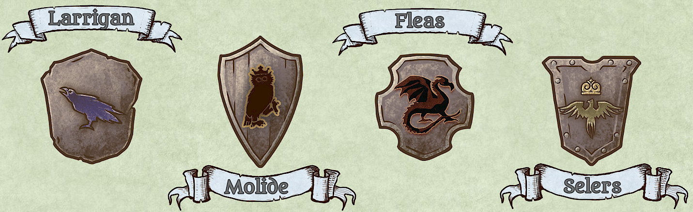
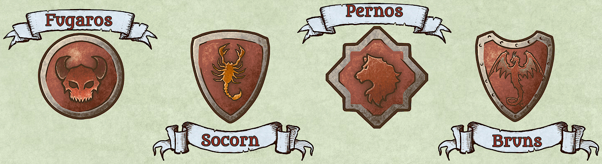
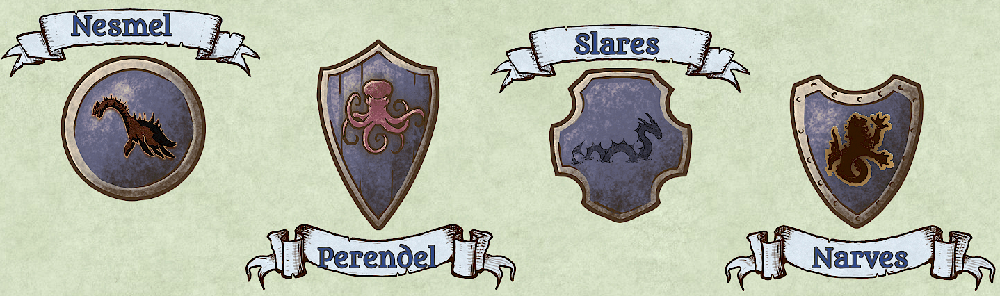
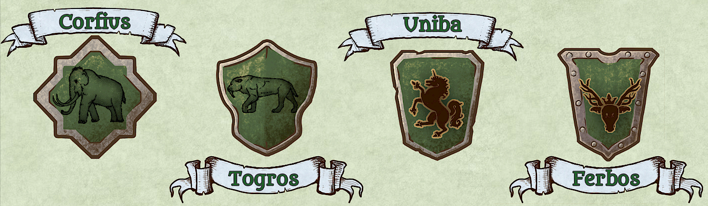

Casas de Gundolan
Egan, el país del viento.
Casa Larrigan
Los Larrigan gobiernan actualmente en Egan. El Kahn del país es Oris Larrigan, conocido por sus hazañas en los servicios secretos del país. Tienen el poder de volverse invisibles.
Don genético: hacerse invisible.
Casa Molide
Los Molide son probablemente la familia más poderosa de Egan, pero actúan históricamente siempre quedaron en un segundo plano por sus principios pacifistas. Le dan a la información una importancia vital y la usan para sus interéses sin tener que usar la fuerza. Aunque han sido muy pocos, los miembros más poderosos de esta Casa no solo pueden leer la mente, sino que también pueden manipular la mente de los demás. No obstante, para leer la mente, la victima tiene que tener una herida abierta.
Don genético: leer y escribir la mente.
Casa Fleas
Los Fleas fueron una familia que estuvo al poder muchos años, pero fueron exterminados. Tienen la mejor visión del continente, pueden ver a decenas de kilometros. Su clave reside en el viento, su poder permite ver lo que ve una corriente de viento, por lo que conforme esa corriente se vaya alejando, más lejos irá viendo la persona.
Don genético: ojos del viento.
Casa Selers
Los Selers son los más rápidos de todo el continente gracias a su poder, el de teletransportarse a cualquier punto al que miren. Como los Fleas, fueron victimas de varias persecuciones que diezmaron su poder y, finalmente, la cuarta guerra de Gundolan acabó con los que quedaban.
Don genético: teletransportación.
Golbi, el país del fuego.
Casa Fugaros
La Casa Fugaros fundó una secta religiosa que estuvo gobernando durante los primeros años de existencia de Golbi. Su apogéo acabó cuando la población se sublevó después de lo acaecido en el templo de Norka, donde miles de niños fueron sacrificados como tributo a Su. Contrariamente a los demás habitantes de Golbi, que pueden controlar el fuego existente, los miembros de la casa Fugaros pueden crear fuego de la nada.
Don genético: crear fuego.
Casa Socorn
Los Socorn han sido famosos por sus propiedades genéticas tóxicas. Son capaces de envenenar a cualquiera con solo rozarlos. Por esta razón, sus miembros siempre han estado poco aceptados, por miedo a envenenarse incluso por accidente. Eso ha provocado un resentimiento histórico que les hace odiar a las demás familias, pero también tienen asumido que por ello nunca podrán gobernar.
Don genético: toxinas.
Casa Pernos
La Casa Pernos es una familia fundamental en las reconstrucciones y las reparaciones de posguerra. De ahí sacan toda su fortuna. Tienen el poder de restablecer lo que se ha quemado a partir de sus propias cenizas, a la excepción de los seres vivos, a los que pueden restablecer en apariencia pero no revivir. También pueden manipular las cenizas para crear otras cosas, así como para defenderse o atacar.
Don genético: manipular la ceniza.
Casa Bruns
Los Bruns gobiernan actualmente en el país de Golbi. Salazar Bruns es el mandamás que gobierna con mano de hierro. Su obsesión por conquistar Garn llevó al continente a la cuarta guerra. Gracias a su poder, los Bruns pueden tocar los dedos de los Dioses sin quemarse, por lo que históricamente han sido utilizados o contratados para intentar robarlos.
Don genético: ignífugos.
Kures, el país del agua.
Casa Nesmel
La Casa Nesmel gobierna en Kures, el país del agua. Su poder les permite congelar el agua y manipular el hielo. Son temidos desde que aislaron una ciudad entera en un igloo cerrado durante meses, por haberse negado a pagar el impuesto. No quedó nadie vivo.
Don genético: congelar.
Casa Perendel
La Casa Perendel fue una casa clave en el pasado, sobre todo para ayudar a irrigar los campos ya que su poder es el de crear agua de la nada. Han solido ser tachados de traidores por su propio país porque, en los últimos años sacaban su fortuna de sus acuerdos con Golbi, para irrigar sus tierras desérticas.
Don genético: crear agua.
Casa Slares
La Casa Slares tiene el poder de convertirse en un pez. Para ello, quien lo quiera hacer necesita algo del pez en el que se quiere convertir. Así, sus miembros son los mejores pescadores, pero también han sido utilizados por su gobierno para estudiar a la fauna marina e incluso para saquear barcos de otros países sin levantar sospechas.
Don genético: convertirse en pez.
Casa Narves
La Casa Narves, similarmente a la casa Slares, ha vivivo mucho bajo el agua. Se dice incluso que sus antepasados construyeron una ciudad submarina, aunque si existe, el secreto nunca ha salido de la familia.
Don genético: respirar bajo el agua.
Rodius, el país de la tierra.
Casa Corfius
La Casa Corfius es la que gobierna el país de Rodius desde sus inicios, gracias a sus miembros que siempre fueron diestros gobernantes ya que nunca ha habido un golpe de Estado. Dieron grandes responsabilidades a las otras tres grandes familias para evitar ansias de poder, y el equilibrio hasta hoy ha funcionado. El emblema de la familia es el Mamut, ya que se dice que un puñetazo de un Corfius duele más que un pisotón de Mamut.
Don genético: fuerza sobrenatural.
Casa Togros
La Casa Togros esta llena de cazadores y coleccionistas. Debido a su poder, la familia les suele incitar a recolectar pelos, uñas o garras de sus animales favoritos, para poder convertirse en uno de ellos cuando quieran. Claro que, cuanto más poderoso es el animal, más difícil es conseguir su ADN. El hecho de convertirse en animal no les permite poder entenderlos ni hablar con ellos, por lo que los propios animales les detectan fácilmente.
Don genético: convertirse en animal.
Casa Uniba
La Casa Uniba tiene como símbolo el Unicornio, que es una de las criaturas más escurridizas del continente. Rarísimos son los que dicen haber visto uno. Su poder les permite viajar por debajo del suelo, haciendo que la tierra se vuelva blanda como el agua a su paso. Así, son con los Larrigan los mejores para camuflarse y escaparse.
Don genético: viajar bajo tierra.
Casa Ferbos
La Casa Ferbos es la que más conecta con Madre Naturaleza gracias a su don. Sus miembros pueden conversar con los animales y las plantas, por lo que siempre han sido buenos creando infusiones curativas y otras medicinas. También son considerados buenos espías gracias a la información que sonsacan a la fauna local.